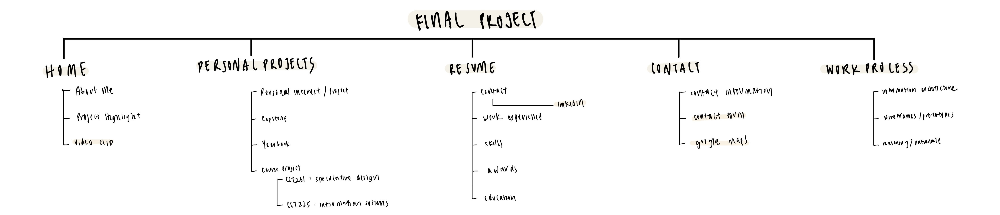
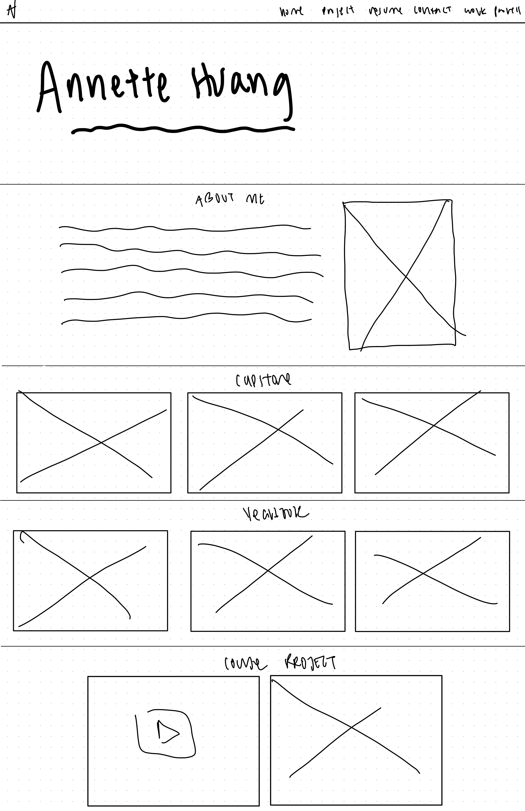
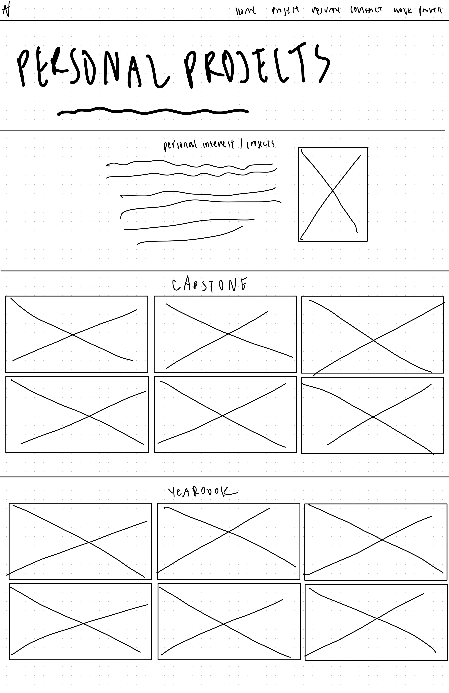
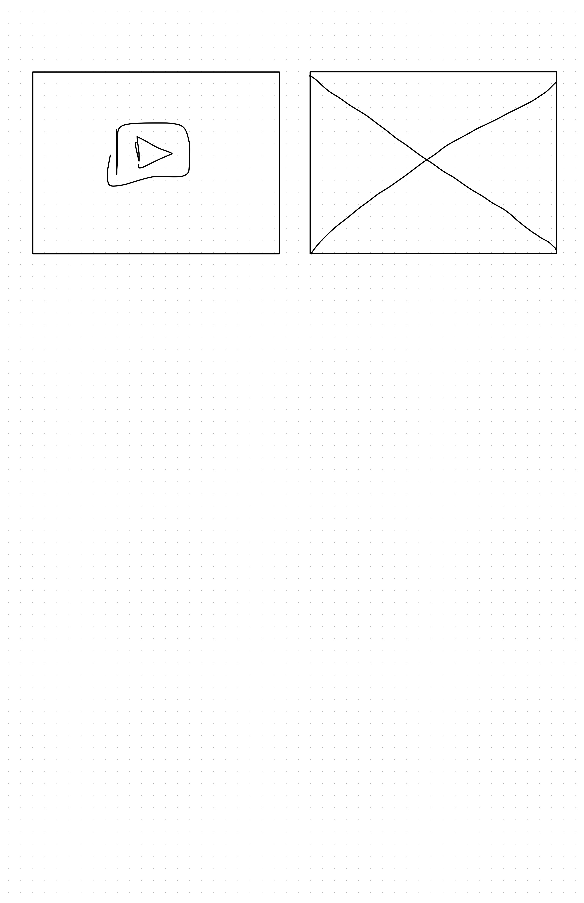

Information Architecture
Wireframes
  
Thought Process
To ensure that WCAG 2.0 Accessibility is carefully implemented on my website, font colors and weight are emphasized to stand out from the background. For example, for all text that is placed in front of images, the text will be bolded and larger. Background colors to text colors are contrasted to each other so it is easy for everyone to read. There is a header and footer on each page, the logo also brings users back to the home page to ensure efficient navigation of the website. Moreover, all key elements of a page are highlighted so users know the focus of each page.
For this project, I wanted to include as much of my personality as possible. This includes the color scheme, the images that I chose, and the overall aesthetics of the page. My focus was more on photography as it’s something I love and do during my free time. A lot of the activities I’ve done in the past had related to photography in some way and I believe it’s one of the best ways to capture memories. The videos and project displayed in the “Personal Projects” section are examples of me utilizing art, photography, and videography into different school projects.
All images and videos in this project were taken by myself, other than the image in the "Personal Projects" page (cited in the page). The YouTube link that is shown on the Home and Projects page were from an actual course I've taken last semester, Speculative Design. Referring to the concepts we learned in class, along with previous assignements I've done before, I took what I learned and what I wanted to showcase and put it together in this assignment. My wireframes were hand drawn on the app, GoodNotes, and uplaoded as JPGs into this project. The logo was designed as a combination the first letter of my first name and last name, AH.